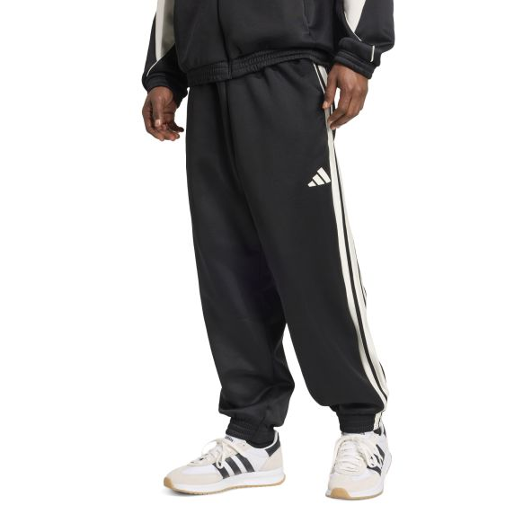
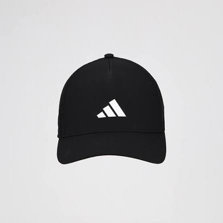
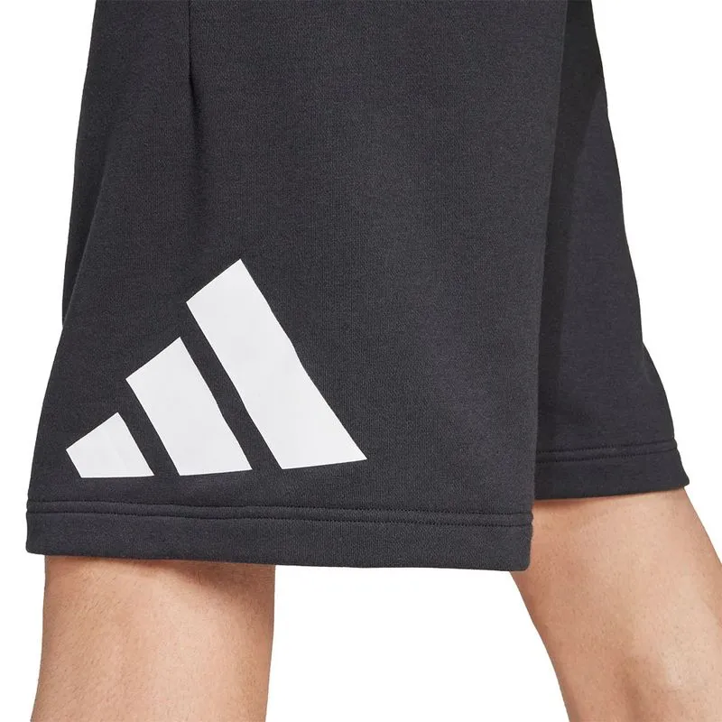

El primer pantalón y prenda de ropa que Adidas puso a la venta fue el pantalón de chándal "Beckenbauer" en 1967. Antes de este lanzamiento, la marca fundada por Adi Dassler en 1949 se dedicaba de forma exclusiva a la fabricación de calzado deportivo.

La primera gorra de todas lanzada al mercado masivo por Adidas fue la gorra de béisbol clásica con el logo del Trifolio (Trefoil), puesta a la venta a principios de 1972.
.jpg)
La primera remera de Adidas lanzada a la venta de forma masiva y comercial fue la remera "Adidas California" (hoy conocida como California Tee).Aunque en 1967 habían debutado en la indumentaria con el conjunto deportivo de Franz Beckenbauer, no fue sino hasta principios de la década de 1970 que la marca diseñó y comercializó su primera línea de remeras individuales de algodón para el público general.

El primer short oficial de Adidas comercializado al público masivo formó parte del lanzamiento de la línea de indumentaria de la marca, inaugurada con el icónico chándal (tracksuit) Franz Beckenbauer en 1967. Antes de ese año, Adidas se dedicaba exclusivamente a fabricar calzado deportivo.